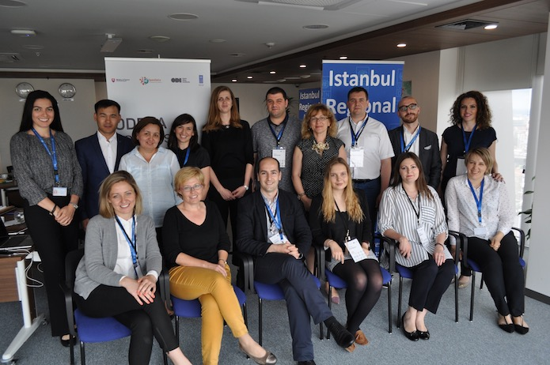

After meeting Eurasian open data leaders last week, Flavia Munteanu reflects on the consensus to rethink open data as a top regional priority, advocate it as a service that citizens have a right to, and leverage success stories as a catalyst for change
Last week's workshop in Istanbul offered open data leaders a chance to share their perspectives and broaden their horizons. CC BY 2.0, uploaded by Moyan Brenn.
Open data leaders face a difficult task. They have to persuade officials, politicians and even the general public that open data is an idea worth pursuing.
Being an open data leader should not be a siloed role. This is the foundation statement of the Open Data Leaders Network. Last week, the ODLN collaborated with the United Nations Development Programme to gather government innovators in Istanbul, with the purpose of exchanging best practices, knowledge and challenges in open data, across the Eurasian region. Seven new innovators with fresh ideas joined the ODLN family, representing Kosovo, Albania, Kyrgyzstan, Macedonia, Kazakhstan and Ukraine.
Constructive partnerships in open data are rare, which makes the leaders’ participation in the ODLN all the more important. The network is a unique, creative space for open data innovators, who are provided with concrete impetus to address open data challenges and reforms at municipal, national and regional levels of governance.
Across Eurasia, resistance from officials to open data reform can pose a challenge for open data leaders, which is all the more incentive for the leaders to learn from each other as champions in the region.
Overcoming open data challenges and making it a Eurasian priority
The workshop in Istanbul kicked off with a discussion about open data challenges encountered in the Balkan region. The participant from the municipality of Gjakova, Kosovo realised that open data could increase transparency in governance and prompted city government to construct a portal for making administrative services open. He found it reassuring to see other leaders from the Commonwealth of Independent States and the Balkans faced with the same problems. If open data challenges in Ukraine also exist in Macedonia and in Kosovo, then the best minds in open data surely can generate solutions and positive impact through the ODLN.
A recurrent theme during the two days was the urgent need to rethink open data as a top priority in Eurasia. In the environment of the ODLN, leaders freely play with ideas about making data sound like more than a game for technical experts. Their task is to change public discourse by advocating that open data is not a public good, rather a free service that citizens have a right to. While this may sound like a truism, the process of treating open data as an official commitment to the public is frequently postponed. Once departments actively choose to publish datasets, they increase their accountability and instil trust.

The ODLN collaborated with the United Nations Development Programme to gather Eurasian government innovators to share best practices, knowledge and challenges in open data. Credit: The ODI.
Learning from open data success stories
Unfortunately, the realisation is slow to come about in Eurasian public institutions. ODLN participants lament the key difficulties they have encountered when processing and updating datasets. Kyrgyzstan’s participant, who is also an elected MP, highlighted her issue with centralised laws, which prohibit the implementation of a digital innovation process. Her country’s troubled political context witnessed two revolutions before 2010, which transformed the request for fair elections into a policy priority. The leader advocated open data as the obvious method to verify an electoral outcome. This led to biometric elections in Kyrgyzstan in 2015, which fostered unprecedented trust in the parliament as a legislative institution. Her success story kicked off the ODI session on successful open data projects worldwide.
As ODI trainers spoke of open elections in Burkina Faso and highlighted the efficiency of open procurement in Brazil, leaders realised that the success story of Kyrgyzstan was not an isolated example. Open data is a modern tool, empowering citizens to demand transparency worldwide. The practical value of the network is to help leaders make open data friends, both within and outside of government. They engage with scenarios of open data in simulated geopolitical contexts, which may well apply to their future challenges at home. They are encouraged to think outside of the box and to apply open data instruments such as the Open Data Barometer and the Open Government Partnership, in order to solve their countries’ issues.
Leveraging regional efforts to embed open data into government processes
Though open data can resolve a chain of systemic problems, the implementation of concrete commitments to national reform remains subject to political will. The collision between policy and practice was highlighted by the Ukrainian participant, who called for transparency in government, especially during the unstable years that followed the Euromaidan revolution. In the absence of a national strategy that prioritises open data, senior officials should, at least, be persuaded of its importance. As ODLN leaders step from the shoes of open data experts into those of open data game changers, they commit to leveraging regional efforts to mainstream open data in governmental processes.
If social and political lessons fall short of incentive, open data innovators are quick to recognise systems of open procurement and budget tracking as requirements for economic growth. No country will turn down a solid investment opportunity. This makes open data a powerful economic tool. In fact, governments in Eurasia already have open procurement systems in place; across Albania and Kosovo, civil servants contribute to budgetary changes, while in Macedonia and Ukraine, citizens highlight inaccuracies to the relevant departments. These are marks of a healthy culture, where open data is accessible to leaders and citizens alike.
What exactly did the regional ODLN teach our leaders? If we aim for long-lasting change in government policy, then we must reach out to civil servants who embrace innovation. Being made welcome into a family of regional open data champions, participants are now able to resort to peer-to-peer support, in a joint effort to change government paradigm in Eurasia.
If you have ideas or experience in open data that you'd like to share, pitch us a blog or tweet us at @ODIHQ.
Flavia Munteanu is an Advisory Intern at the ODI. Follow @flaviamunteanu on Twitter._